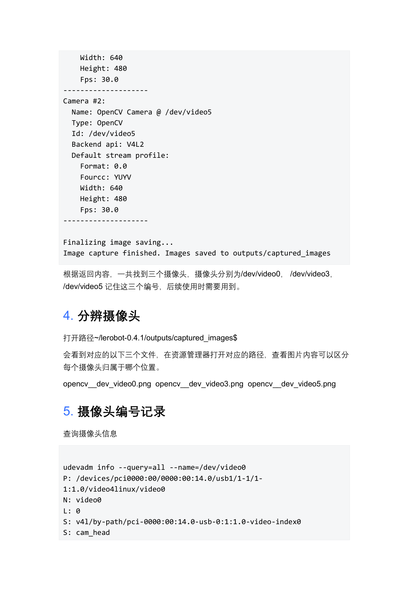
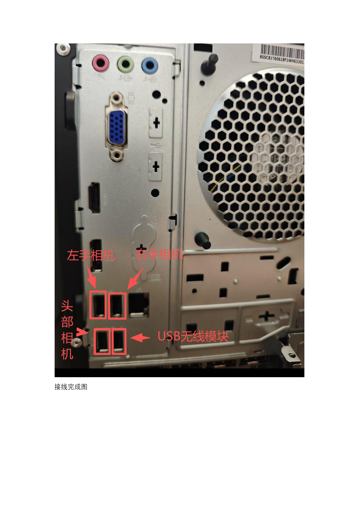
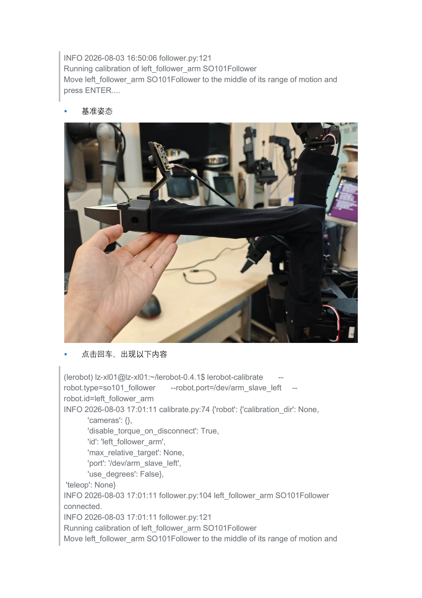
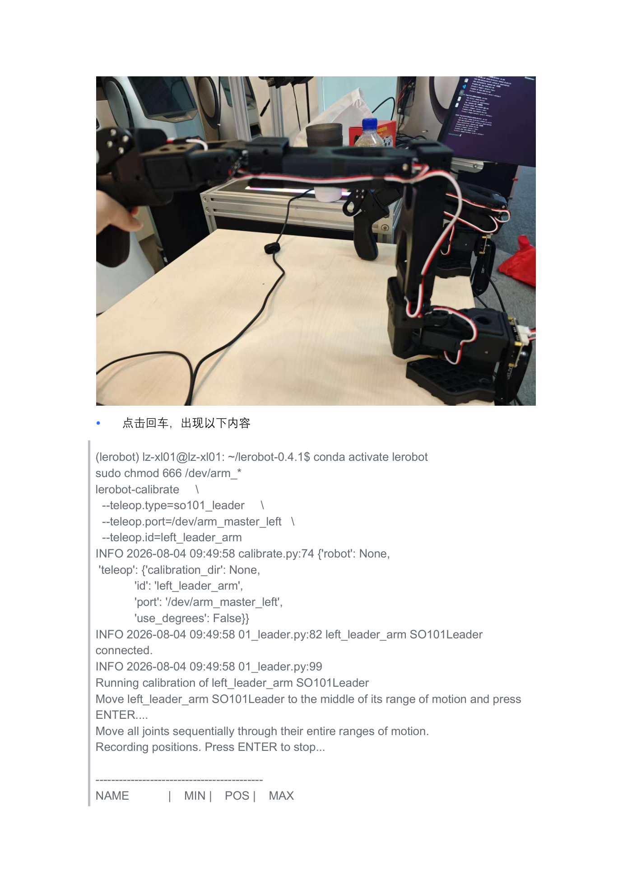
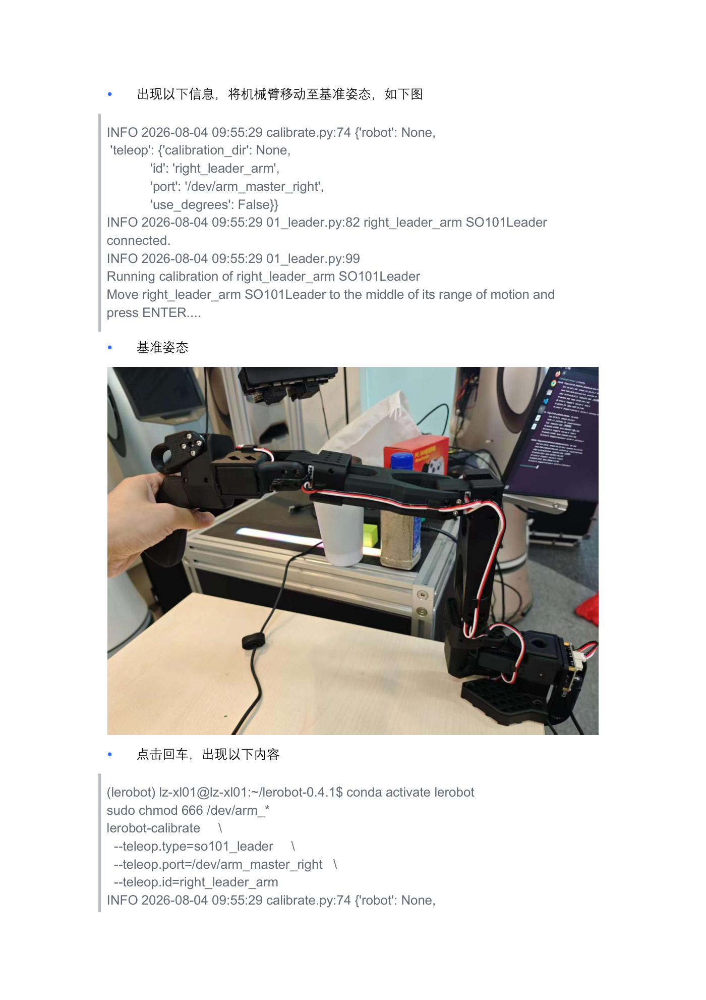
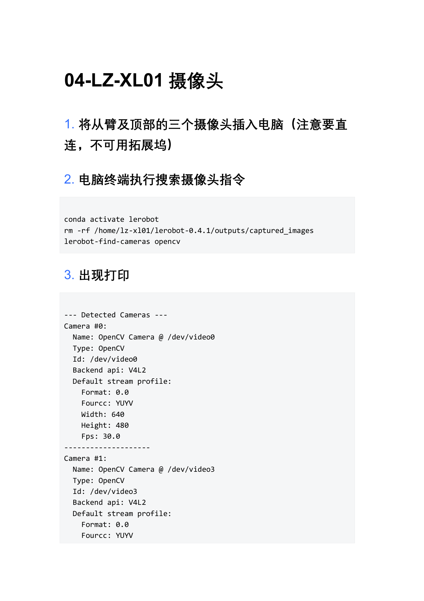
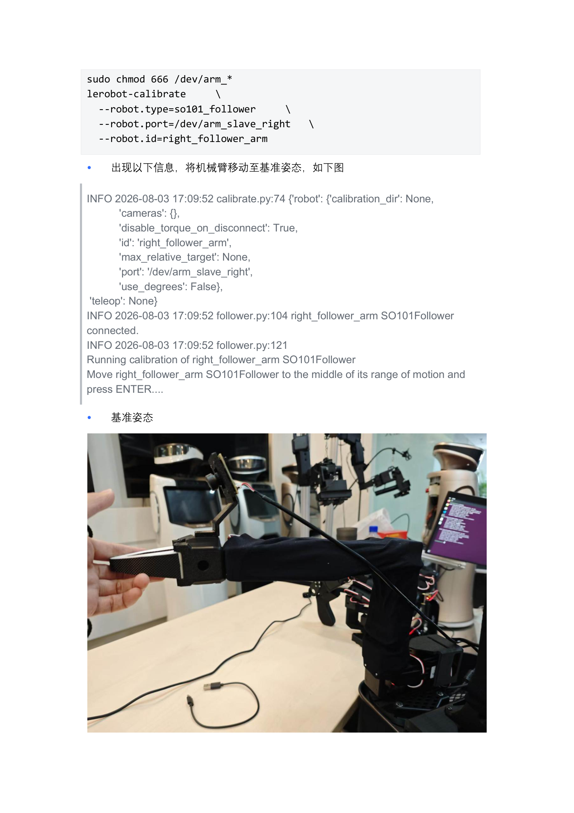
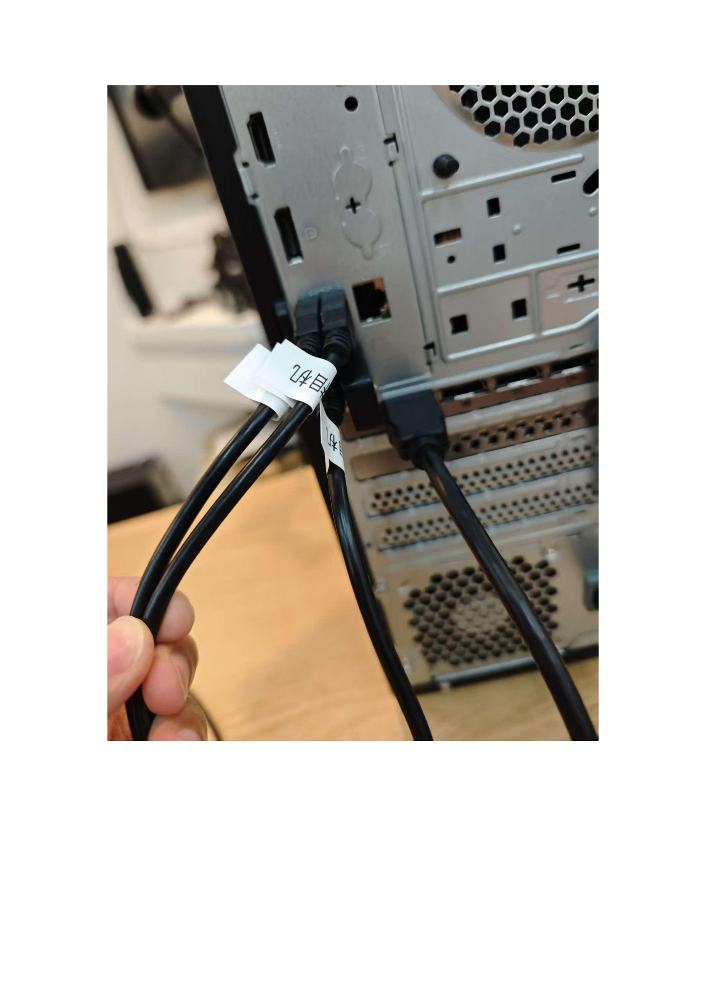

摄像头配置与主从臂校准
端到端的"感知端"和"执行端"要能互通语言，靠的都是标定：三路摄像头锁定插口别名，让画面永远知道自己来自哪个位置；四条臂逐一执行 lerobot-calibrate，录下 2047 中位基准与全行程 MIN/POS/MAX，把手感差异抹平。本课配 3 段校准讲解视频，做完后你的主从臂才能"指哪打哪"。
01学习目标
- 能按第 04 章完成三摄像头接入：直连不走拓展坞，用抓拍图分辨哪路是左/右/头
- 能读懂
lerobot-find-cameras opencv输出并核对 /dev/cam_left·right·head 三个别名 - 理解校准的两阶段流程：2047 中位基准姿态 → 全行程录 MIN/POS/MAX
- 能独立校准四条臂（左/右从臂用 --robot，左/右主臂用 --teleop），参数不串
- 能查 JSON 校准文件，并判断"细微差异正常、较大差异必须重校"与输 'c' 重校的方法
02原理讲解：标定就是"主从对表"
标定（calibration）好比两块对表：主厨（主臂）和帮厨（从臂）各自站位不同、手长短有微差，开做前两人把"中在哪、两端到哪"对一遍，之后才谈得上跟随。电机角度没有出厂绝对刻度——它只知道"编码器读数 0~4095"，哪个读数是中位、哪个是物理极限，只能靠你亲手掰一遍录下来：
摄像头侧的"标定"则是身份绑定：video0/3/5 是插拔顺序给的临时名，第 04 章要求摄像头直连、不可用拓展坞、不可变动插口——只有插口固定，ID_PATH 才稳定，udev 才能把"端口 7"永久翻译成 /dev/cam_left。至此感知端（cam_*）与执行端（arm_*）都有了稳定坐标，遥操作才有意义。
03硬件与材料
| 对象 | 数量 | 本课要求 |
|---|---|---|
| USB 摄像头（左/右/头） | 3 | 插主机背面指定端口（7 / 6 / 1），直连不可用拓展坞，插后不再变动 |
| 从臂（follower） | 2 | /dev/arm_slave_left·right，so101_follower 校准 |
| 主臂（leader） | 2 | /dev/arm_master_left·right，so101_leader 校准 |
| 终端与权限 | — | conda activate lerobot；sudo chmod 666 /dev/arm_* 后再校准 |
| 参考视频 | 3 段 | 主臂校准讲解版 / 从臂校准讲解版 / 从臂校准日志版 |

04步骤实践：先锁摄像头，再校四条臂
① 主臂校准讲解版
主臂（leader）两阶段校准全程讲解：基准姿态怎么摆、行程怎么掰、日志怎么看。
② 从臂校准讲解版
从臂（follower）校准讲解：--robot.* 参数、中位 2047 确认与逐关节录程手法。
③ 从臂校准日志版
逐行对照校准日志：connected → 中位提示 → Recording positions → MIN/POS/MAX 表。


05关键命令：calibrate 四臂与重校
# ① 摄像头搜索与分辨（第 04 章） conda activate lerobot rm -rf /home/lz-xl01/lerobot-0.4.1/outputs/captured_images lerobot-find-cameras opencv # Camera #0 → /dev/video0 · #1 → /dev/video3 · #2 → /dev/video5（YUYV 640×480@30） udevadm info --query=all --name=/dev/video0 # 查 ID_PATH，核对 cam_head 等别名 # ② 从臂校准（第 05 章 2）——左右各一次，只换 port/id sudo chmod 666 /dev/arm_* lerobot-calibrate \ --robot.type=so101_follower \ --robot.port=/dev/arm_slave_left \ --robot.id=left_follower_arm # 右从臂：--robot.port=/dev/arm_slave_right --robot.id=right_follower_arm # ③ 主臂校准（第 05 章 3）——注意用 --teleop.* 参数 lerobot-calibrate \ --teleop.type=so101_leader \ --teleop.port=/dev/arm_master_left \ --teleop.id=left_leader_arm # 右主臂：--teleop.port=/dev/arm_master_right --teleop.id=right_leader_arm # ④ 两阶段交互：摆基准回车 → 逐关节掰全程 → 回车出表 Move … to the middle of its range of motion and press ENTER.... Move all joints sequentially through their entire ranges of motion. Recording positions. Press ENTER to stop... NAME | MIN | POS | MAX ← 初始全 2047（电机位置中间值），录完如 859|1982|2740 # ⑤ 重新校准：提示处输 c 回车（直接回车=沿用旧文件） Press ENTER to use provided calibration file associated with the id … or type 'c' and press ENTER to run calibration: # ⑥ 校准数据位置（第 05 章 5） # 主臂 …/calibration/teleoperators/so101_leader/*.json # 从臂 …/calibration/robots/so101_follower/*.json # 字段例：{"id":1,"drive_mode":0,"homing_offset":-517,"range_min":854,"range_max":3266}



06动画讲解：主从臂坐标对应标定
下图上半是主臂、下半是从臂：同一个关节在两块"表"上各自录 MIN/POS/MAX，中位对齐后，主臂掰多少、从臂就跟多少：


07互动练习：标定偏差滑杆判读
文档说"每次校准可能会有细微数值变化，如出现较大数值差异，则说明校准有问题"。拖动滑杆设定本次与上次校准的偏差，看判读结果：
08常见问题
- find-cameras 只找到 1~2 个摄像头：有相机走了拓展坞或没插指定端口；回第 04 章"直连 + 按接口插入"重插再来
- 起步表全是 2047 不动：还没进录程阶段——中位回车后要"逐关节掰全程"，再按 ENTER 结束
- 校准提示 PermissionError：先
sudo chmod 666 /dev/arm_*再执行（第 05 章每条命令前都有这行） - 想要重校却直接沿用旧值：提示处必须输 c 回车；直接回车是使用已有校准文件
- 左右臂参数抄混：从臂永远
--robot.*/ so101_follower、主臂永远--teleop.*/ so101_leader，port/id 左右严格对应 - 两次校准数值差异很大：基准姿态没摆到位或行程没掰满——文档明确"出现较大数值差异……重新执行操作"